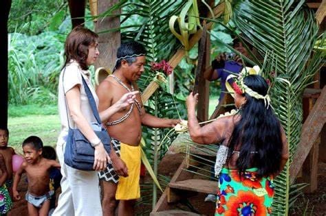

Fale Comigo!
Fale Comigo!
Etnoturismo
O etnoturismo, também conhecido como turismo de base comunitária, é uma forma de viagem que busca a interação com culturas indígenas e comunidades tradicionais.
Em Nhandereko, o etnoturismo é uma oportunidade de visitar e conhecer a aldeia Guarani Mbya, participando de atividades culturais, rituais e interações que promovem a valorização e a preservação de seus costumes e tradições.